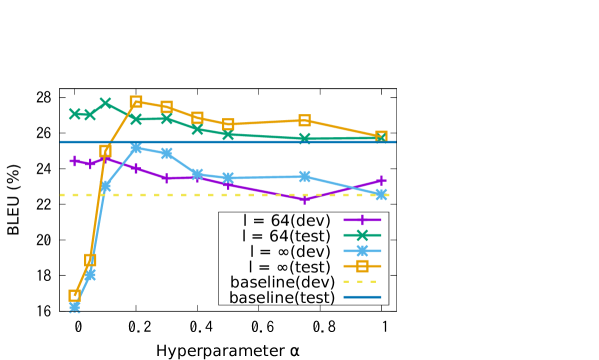

原始文本自然语言处理
词元化 Tokenization
模型不认识文字——只认识数字。把一段人写的文本切成模型能处理的整数序列，这一步叫分词/词元化。它决定了模型「看到」什么、每个 token 承载多少信息，以及——对你来说——花多少钱。这一节会带你手推一遍 BPE 的合并过程、写出三十行可运行的训练代码，再逐个拆开中文成本、数字算术、词表膨胀这些一线项目真会踩的坑。
一图看懂
分词做的三件事：切分、编码、映射到词表 ID。就像字典里每个字对应一个页码——但绝大多数「字」在里面根本找不到，所以要用子词拼出来。
- 规范化Unicode 归一 大小写等
- 预切分按空格 标点 数字规则粗分
- 子词切分自然 / 语言 / 处理
- 查词表映射到 token id
- 整数序列1542 832 673
- 模型生成的 token id
- 解码器拼回字符串
为什么不能直接用字或词
先用一个生活化类比建立直觉：分词器的任务，好比给一篇文章做「查字典编码」——把每个能直接查到的词记成一个页码，查不到的片段拆开拼凑。这里有两个天然的极端：要么把字典做到「一个句子一个词都收得下」（词级），要么把字典缩到「每个字母都有一页」（字符级）。前者字典厚得离谱且永远收不全新词，后者页面多到整篇文章要翻好几倍页数。子词分词（Subword Tokenization，介于字与词之间、把高频片段成块编码的分词方式）就是被这两个极端夹出来的「中间路线」。
最朴素的想法有两种：
- 按字切：每个字符一个 token。词表极小（几千），但同样的文本会变成一长串 token——同样一句话，token 数是按词切的好几倍，推理成本和延迟跟着翻倍，而且模型要跨更多位置才能拼出一个完整语义单元。
- 按词切：空格断开就是词。词表极大（几十到上百万），而且一定会遇到词表里没有的词——你训练完上线第一天，「ChatGPT」就不在词表里；更不用说网络新词、拼写错误、数学公式、代码里的变量名。所有这些都会退化成一个
<UNK>，信息直接丢失。
| 切分粒度 | 词表规模 | 序列长度 | 未登录词 | 致命问题 |
|---|---|---|---|---|
| 字符级 | 几十到几千 | 很长 | 基本不会有 | 序列长导致 $O(n^2)$ 注意力开销暴涨；单个 token 语义稀薄 |
| 词级 | 几十万到上百万 | 最短 | 必然大量出现 | 嵌入层参数爆炸；新词无法表达；中文没有天然空格边界 |
| 子词级 今天的标准答案 |
3 万到 25 万 | 适中 | 拆成更小片段兜底 | 切分结果不一定符合语言学直觉；数字和罕见符号会被切碎 |
| 字节级 | 基础 256 + 合并结果 | 对非拉丁文字偏长 | 理论上归零 | 一个汉字要 3 个字节起步，中文 token 效率天然吃亏 |
两个极端之间，需要一个折中方案：把常见的词或片段直接存成一个 token，罕见的拆成更小的子词颗粒，连字符都没见过的极端情况退到字节级别。这就是子词分词（Subword Tokenization）的动机。
一句话直觉
分词的本质是统计压缩：出现频率高的组合放进词表，一次编码就能表达；低频的拆碎，用几个 token 拼出来。就像仓库管理——畅销品放门口货架，冷门货塞角落，贴两张标签才能找到。
分词器的十年演进
子词分词不是一开始就有的。它是机器翻译领域为了对付「罕见词」被逼出来的，然后被整个 NLP 界继承下来。
timeline
title 主流分词方案的出现顺序
机器翻译时期 : 2016 Sennrich 把 BPE 从数据压缩算法搬到罕见词切分上
: 2016 Google NMT 系统使用 WordPiece 处理词表外单词
预训练时期 : 2018 BERT 沿用 WordPiece 并引入 ## 词中前缀
: 2018 SentencePiece 把空格当普通字符 支持无空格语言
: 2018 Unigram 语言模型分词与子词正则化被提出
大模型时期 : 2019 GPT-2 采用字节级 BPE 彻底消灭未登录字符
: 2023 之后 主流开源模型词表普遍扩到十万量级 加强多语言覆盖
BPE：从字符开始，反复合并最频繁的一对
先给一个生活化类比：BPE（Byte-Pair Encoding，字节对编码，一种从字符开始反复合并最高频相邻对的贪心算法）很像搭乐高——你手里只有最小颗粒的积木，但你会统计「哪两块积木被拼在一起的次数最多」，拼好它们，再统计「哪两块（可能是刚拼好的大块）又拼在一起最多」，继续拼……直到拼出一个满意的零件库。整个过程没有一个零件是设计出来的，全是「拼的人多了自然成块」的结果。这就是 BPE 的全部思想：数据驱动、贪心、无语言学规则。
BPE（Byte-Pair Encoding）是所有现代分词器的基础——GPT 系列用 BPE 的变体，Llama 也基于 BPE。它的算法出奇简单：从字符开始，反复把最常相邻出现的两个符号合并成一个新符号，直到达到预设的词表大小。整个过程完全数据驱动，没有任何语言学规则。
stateDiagram-v2
[*] --> Init
Init: 初始化 把每个单词拆成字符序列并统计词频
Init --> Count
Count: 统计相邻对 遍历全部单词累加每种符号对的加权次数
Count --> Pick
Pick: 选最高频对 频率打平时由实现顺序决定
Pick --> Merge
Merge: 执行合并 替换全部出现处并写入词表与有序合并表
Merge --> Check
Check: 检查词表是否达到预设大小
Check --> Count: 未达上限 继续下一轮
Check --> [*]: 达到上限 训练结束
用四个单词手推五轮
取分词领域最经典的那个玩具语料（数字是词频，</w> 是词尾标记）：
l o w </w>出现 5 次l o w e r </w>出现 2 次n e w e s t </w>出现 6 次w i d e s t </w>出现 3 次
| 轮次 | 最频繁的相邻对 | 频率 | 合并出的新符号 | 合并后语料变成 |
|---|---|---|---|---|
| 1 | e + s | 6 + 3 = 9 | es | n e w es t、w i d es t |
| 2 | es + t | 9 | est | n e w est、w i d est |
| 3 | est + </w> | 9 | est</w> | 词尾的 est 成为一个整体 |
| 4 | l + o | 5 + 2 = 7 | lo | lo w、lo w e r |
| 5 | lo + w | 7 | low | low、low e r |
五轮之后，词表里多了 es、est、est</w>、lo、low 五个新符号。注意 BPE 并没有被告知「est 是英语的最高级后缀」——它只是发现这三个字符老是黏在一起，就把它们粘成了一块。语言学规律是从统计里自己浮出来的。
关键：合并表是有序的
训练结束后你得到的不只是「有哪些 token」，更重要的是一张有先后顺序的合并表。编码一个新词时，就按这张表从上往下依次尝试合并。以从未在训练语料里出现过的 lowest 为例：
| 应用第几条合并规则 | 当前符号序列 |
|---|---|
| 起点（拆成字符） | l o w e s t </w> |
| ① e+s → es | l o w es t </w> |
| ② es+t → est | l o w est </w> |
| ③ est+</w> → est</w> | l o w est</w> |
| ④ l+o → lo | lo w est</w> |
| ⑤ lo+w → low | low + est</w>（2 个 token） |
训练语料里根本没有 lowest 这个词，但它被干净地切成了「low + est」。这就是子词分词的泛化能力：用见过的零件，拼出没见过的词。同样地，「player」会不会被切成「play」+「er」，也完全取决于合并表里 er 和 play 的先后顺序——一个固定的合并序列保证相同输入永远产生相同的分词结果。
动手：三十行实现 BPE 训练
把上面手推的过程写成可运行的代码。这段程序不依赖任何第三方库，跑完会打印出和上表完全一致的合并顺序。
import re
from collections import Counter
# 语料:key 是用空格分开的符号序列,value 是词频
vocab = {
"l o w </w>": 5,
"l o w e r </w>": 2,
"n e w e s t </w>": 6,
"w i d e s t </w>": 3,
}
def get_stats(vocab):
"""统计所有相邻符号对的加权出现次数"""
pairs = Counter()
for word, freq in vocab.items():
syms = word.split()
for i in range(len(syms) - 1):
pairs[(syms[i], syms[i + 1])] += freq
return pairs
def merge_pair(pair, vocab):
"""把语料里所有的 'a b' 替换成 'ab'。
前后的零宽断言保证只匹配完整符号,不会切进别的符号中间。"""
target = re.escape(" ".join(pair))
pattern = re.compile(r"(?<!\S)" + target + r"(?!\S)")
joined = "".join(pair)
return {pattern.sub(joined, word): freq for word, freq in vocab.items()}
NUM_MERGES = 5
merges = [] # 有序合并表,编码时要原样重放
for step in range(NUM_MERGES):
stats = get_stats(vocab)
if not stats:
break
best = max(stats, key=stats.get) # 频率相同时取先遇到的
vocab = merge_pair(best, vocab)
merges.append(best)
print(f"第 {step + 1} 轮: {best[0]} + {best[1]} -> {''.join(best)} 频率={stats[best]}")
def encode(word, merges):
"""对新词按合并表顺序做切分"""
syms = list(word) + ["</w>"]
for a, b in merges:
i = 0
while i < len(syms) - 1:
if syms[i] == a and syms[i + 1] == b:
syms[i:i + 2] = [a + b]
else:
i += 1
return syms
print(encode("lowest", merges)) # 训练时没见过这个词
把 NUM_MERGES 从 5 调到 50，你会看到词表逐渐把整个语料「吃」成越来越少、越来越长的 token；调到足够大时，每个单词都会变成一个独立 token——那就退化成词级分词了。词表大小这个超参数，本质上是在「序列长度」和「词表参数量」之间选一个平衡点。
展开：真实分词器比这段代码多做了什么
上面的实现是教学版，生产级分词器至少还多出四层：
- 规范化（Normalization）：Unicode 归一化（把「é」的组合形式和预组合形式统一）、可选的大小写折叠、控制字符清理。不同模型的规范化规则不同，这会直接导致同一段文本 token 数不一样。
- 预切分（Pre-tokenization）：在跑 BPE 之前，先用正则把文本粗切一遍。GPT-2 起使用一条正则把「前导空格 + 单词」「连续数字」「标点」分别切开——这就是为什么 OpenAI 系分词器里
" hello"（带前导空格）和"hello"是两个不同的 token。 - 字节回退：任何无法用现有子词表达的内容，都能退回到 256 个字节 token，保证编码永不失败。
- 高效实现：朴素实现每轮都要重扫全部语料，复杂度太高。生产实现会维护「符号对 → 出现位置」的倒排索引做增量更新，并用 Rust 等语言实现（Hugging Face 的 tokenizers 库、OpenAI 的 tiktoken 都是这么做的）。
想从零把这几层都写一遍，见 实战：从零实现一个分词器。
三种主流的 BPE 变体
BPE 是那颗种子，不同实现方在上面嫁接了各自的改进：
| 算法 | 核心差异 | 代表 |
|---|---|---|
| BBPE Byte-level BPE |
基本粒度为单个字节（0-255），而不是字符。任何 Unicode 字符、emoji、从未见过的符号——全都可以由 1-4 个字节拼出来。彻底消灭了未登录字符问题 | GPT-2 起的 OpenAI 分词器 |
| WordPiece | 合并时不是选频率最高的，而是选对语言模型训练似然提升最大的那一对。直觉上是选「合并后信息增益最大」的对，而不是「出现最多」的对。子词开头用特殊前缀标记（如「##」）区分词首和词中 | BERT、早期的 T5 |
| SentencePiece | 严格说它是一个工具库而不是一种算法，底层可选 BPE 或 Unigram。它的关键设计是不依赖空格分词——直接从原始文本的字符流开始，把空格当作一个普通字符处理（通常替换成「▁」）。这对没有显式词边界的语言（中日韩）尤其重要，也保证了解码能无损还原原文的空格 | Llama、T5、XLM-R |
| Unigram LM | 建词表策略和前三者完全相反：先建一个很大的候选词表，然后反复删除「删掉它对整体似然损失最小」的 token，直到剩下目标数量。因为它天然给出每个切分的概率，还能做「子词正则化」——训练时对同一个词随机采样不同切法，当数据增强用 | SentencePiece 的另一种模式 |
自底向上 vs 自顶向下
记这一条就够了：BPE 和 WordPiece 是「从字符往上合并」，Unigram 是「从大词表往下裁剪」。前者贪心、快、结果唯一；后者基于似然、慢、能给每种切分打概率。SentencePiece 是承载它们的工具外壳，负责处理空格和无损还原。
WordPiece：把「最频繁」换成「最划算」
BPE 挑合并对的准则是纯频率——谁相邻出现得多就先合并谁。这条准则有个明显的毛病：两个本身就极高频的符号，哪怕只是「碰巧」经常挨在一起，也会被优先合并。英文里的 t 和 h 就是典型，它们各自频率都很高，相邻次数自然水涨船高，但粘出来的 th 未必是一个有价值的语义零件。
WordPiece 的修正很朴素：给频率除掉一个「本底期望」，改成最大化下面这个打分。
$$\mathrm{score}(a,b)=\frac{\mathrm{count}(a,b)}{\mathrm{count}(a)\times \mathrm{count}(b)}$$
分母才是灵魂。如果 a 和 b 各自都很常见，那它们相邻本来就该很多，分母把这份「理所当然」扣掉，剩下的才是超出随机预期的黏合度。举一个能手算的例子：候选对甲相邻出现 100 次，但 a 单独出现 1000 次、b 单独出现 1000 次，打分是 100 除以 100 万，即 0.0001；候选对乙只相邻出现 60 次，可是 c 单独只出现 80 次、d 只出现 100 次，打分是 60 除以 8000，即 0.0075。BPE 会选甲（100 大于 60），WordPiece 会选乙（打分高出 75 倍）——因为 c 和 d 几乎「只在一起出现」，粘成一块显然更划算。这个比值在信息论上正比于两个符号的逐点互信息，所以 WordPiece 挑出来的子词往往更贴近真实语素。
第二个差异藏在编码阶段。BPE 编码是「按顺序重放合并表」，WordPiece 编码则是从左往右的最长匹配：从词首开始，找词表里能匹配的最长前缀，切下来；剩下的部分加上 ## 前缀继续找。以 playing 为例，若词表含 play 与 ##ing，结果就是 play 加 ##ing 两个 token。## 的作用是明确告诉模型「这个片段不在词首」，从而把作为独立单词的 ing 和作为后缀的 ##ing 区分成两个不同 token。一旦某个位置连一个字符都匹配不上，整个词直接判成 [UNK] 丢掉——这正是 WordPiece 在处理生僻符号和 emoji 时不如字节级 BPE 稳的根本原因。
Unigram：先撒大网，再一层层收
Unigram 的思路和前两者完全反过来。它假设一句话被切成 $k$ 段之后，这种切法的概率就是各子词概率的连乘：
$$P(\mathbf{x})=\prod_{i=1}^{k} p(x_i),\qquad \sum_{x\in V} p(x)=1$$
训练是一个四步循环，反复执行直到词表缩到目标大小：
- 撒网：先用语料里的高频子串（常借助后缀数组，或干脆先跑一遍 BPE）造一个远大于目标的候选词表，通常是目标规模的若干倍。
- 拟合概率：用 EM 算法估计每个候选 token 的 $p(x)$。E 步对每个句子用维特比算法找最优切分（或统计所有切分的期望计数），M 步按计数归一化更新概率。
- 算删除代价：对每个 token 单独计算「把它从词表里删掉之后，整个语料的对数似然会下降多少」，这个降幅就是它的 loss。降幅越小说明它越可有可无——因为总有别的切法能顶上。
- 裁剪：按 loss 从小到大排序，一次砍掉最没用的一批（常见比例是 10% 到 20%），但永远保留全部单字符作为兜底，否则会出现某些字符根本切不出来的死局。
用一个能手算的玩具例子体会一下第 2 步在算什么。假设词表里 $p(\text{北京})=0.05$、$p(\text{大学})=0.04$、$p(\text{北京大学})=0.008$，那么「北京大学」这四个字有两种主要切法：切成两段的对数概率是 $\ln 0.05 + \ln 0.04$，约等于 $-3.00 + (-3.22) = -6.22$；切成一整块则是 $\ln 0.008 \approx -4.83$。后者更大，所以维特比会选择把「北京大学」当成一个 token。反过来，如果语料里这个组合其实很罕见、概率掉到 0.001，那么 $\ln 0.001 \approx -6.91$ 就低于分成两段的 $-6.22$，切分结果立刻翻转成「北京」加「大学」。整张词表就是这样在「长 token 省长度」和「短 token 概率高」之间被似然函数自动调平的，不需要任何人工规则。
因为每种切分都自带概率，Unigram 还能顺手做一件 BPE 结构上做不到的事：子词正则化。训练下游模型时不总是取最优切分，而是从概率最高的前 $n$ 个候选切分里按概率采样一个，同一个词在不同 batch 里可能被切成不同形状。这等于给文本做了一层数据增强，对低资源语言和含拼写噪声的输入尤其有帮助。代价是分词不再确定，复现实验必须固定随机种子；而且推理时通常要切回确定性的最优切分，否则同一个输入两次调用结果会不一致。
子词正则化这个机制，出自 Kudo 2018 年的论文《Subword Regularization》（子词正则化）。它的核心实验结论适合用论文原图来证明——「给同一句话随机换一种切法」这件事，确实能让下游翻译模型变强，但强多少、会不会反而变差，取决于采样超参数。看下面的原图：

逐块读这张图。第一，纵轴是 BLEU（BLEU，Bilingual Evaluation Understudy，机器翻译最常用的自动评估分数，越高越好），横轴是「采样序列长度」——也就是子词采样时考虑的分词候选序列长度，论文里用 $l$ 表示，可以直观理解为「采样时允许的切分候选规模」。第二，多条曲线对应不同采样温度：温度（temperature）在这里控制从候选切分里采样时有多「激进」，温度越高越爱选概率低的奇怪切法。第三，也是最值得记住的结论：每条曲线都先升后降，存在一个明显的峰值区间——超参数太小（基本等于不做正则化）和太大（把分词随机化过头）都会让 BLEU 掉回甚至低于基线。这张图给出的实操启示是：子词正则化不是「开了就有效」的无脑开关，必须配套做一轮超参数扫描，否则可能白亏训练成本。
SentencePiece：把空格也当成一个普通字符
上面三种算法都隐含一个前提——「文本已经按空格切成词了」。这个前提在英文里成立，在中文、日文、泰文里直接崩溃，因为它们压根没有显式词边界。SentencePiece 的解法简单粗暴：不做任何语言相关的预切分，直接把原始字符串（连同空格）整个喂给 BPE 或 Unigram，只是先把空格替换成一个可见的替代字符「▁」（Unicode 码位 U+2581）。
于是 Hello world 在内部变成 ▁Hello▁world，切出来的 token 可能是 ▁Hello 和 ▁world。解码时只要把所有 token 首尾相连拼起来、再把「▁」换回空格就行，字符级别完全无损：原文有几个连续空格、行尾有没有多余空格，都能一字不差地还原。这一点在生成代码、YAML、Markdown 时至关重要——那些靠「按空格 join 回去」拼文本的老式分词器，会把缩进悄悄改掉，生成的 Python 代码直接语法报错。
SentencePiece 还有两个常被忽略但很实用的开关。一是 add_dummy_prefix：默认会在句首自动补一个「▁」，让同一个词出现在句首和句中时拿到相同的 token，避免模型为「句首的 the」和「句中的 the」学两套表示。二是 byte_fallback：把词表覆盖不到的字符退回成字节 token，这样即使底层不是字节级 BPE，也能拿到「永不产生 UNK」的保证。Llama 系列用的就是「SentencePiece + BPE + byte_fallback」这个组合。
sequenceDiagram
autonumber
participant U as 应用代码
participant T as 分词器
participant M as 模型
U->>T: encode 今天天气不错
T->>T: 规范化 与 预切分
T->>T: 按合并表做子词切分
T-->>U: 返回 token id 列表
U->>M: 送入 id 列表 加上特殊 token
M-->>U: 逐步返回生成的 token id
U->>T: decode 生成的 id 列表
T->>T: 查表还原成字节 再拼成字符串
T-->>U: 返回可读文本
Note over T,M: 编码与解码必须用同一份词表
换分词器等于换了一种语言
换分词器等于换了一种语言
真实世界的四个坑
先给一个生活化类比：分词器就像一家餐厅的「传菜设计」——菜怎么切、盘子多大、一次端几盘，看似是后厨的小事，却直接决定了翻台速度（成本）、摆盘效果（输出质量）和顾客体验（上下文里能装多少菜）。下面这四类坑，全都来自真实项目里「传菜设计没做好」的教训。
分词看起来只是个预处理步骤，但它的设计选择会一路穿透到成本、精度和用户体验里。下面四个坑全都来自一线项目的真实反馈。
坑一：中文一个字就要一到两个 token
同一个意思，中英文的 token 消耗量差了一倍以上。拿「我今天心情不错」来说——中文分词器可能切成 5-6 个 token，每个汉字或双字词各占一个；而英文「I'm feeling good today」在 BPE 分词器下大概是 4-5 个 token，因为像「feeling」这种高频词本身就是一个 token。
更底层的原因在字节级 BPE 上：一个常见汉字在 UTF-8 里占 3 个字节，而一个英文字母只占 1 个。如果分词器训练语料以英文为主，中文字符往往没能积累出足够的合并规则，就会退化成「一个汉字 = 2 到 3 个 token」的最坏情况。
直接后果：同样含义的内容，中文输入的 token 消耗通常明显高于英文。这意味着中文应用的 API 成本天然更高，上下文窗口里能放的信息也更少。更隐蔽的一个后果是，因为中文 token 的信息密度更低，同等 token 预算下的模型表现通常低于英文。
缓解手段有限：可以选针对中文优化过的分词器（国内模型的 tokenizer 普遍对中文做了增强，具体压缩率以各家官方文档为准），或者把冗余内容在到达模型前先裁掉（见 上下文工程）。但根本差异是 tokenizer 训练语料的语言分布决定的，应用层能调的幅度不大。
新手最容易搞错：别用字符数估算 token 数
很多人凭「大约 1 个汉字 = 1 个 token」或「4 个英文字符 = 1 个 token」来估成本，这个经验值在纯散文上勉强能用，但在代码、JSON、表格、含大量数字的文本上会严重偏低——这些内容的 token 密度可能是散文的两三倍。要准确计数，唯一可靠的办法是调用你实际要用的那个模型的分词器算一遍。
压缩率：唯一值得记的指标是「每 token 摊到几个字符」
比较两个分词器好坏，不要看词表多大，看压缩率——同一段文本，谁切出来的 token 更少。定义很简单：$\text{压缩率} = \dfrac{\text{字符数}}{\text{token 数}}$，数值越大越省。这个指标之所以重要，是因为它同时决定了三件事：API 账单、上下文窗口能塞下多少内容、以及同样算力下模型能读完多少语料。
对字节级 BPE，压缩率的取值范围是可以严格推导的，不需要任何实测。关键事实是 UTF-8 的编码长度：ASCII 字符（英文字母、数字、常见标点）占 1 个字节，绝大多数常用汉字占 3 个字节，多数 emoji 占 4 个字节。字节级 BPE 的最小单位就是字节，所以：
| 字符类型 | UTF-8 字节数 | 最坏情况（无任何合并规则） | 最好情况（该字符已成独立 token 或已并入词） |
|---|---|---|---|
| 英文字母 / 数字 / ASCII 标点 | 1 | 1 token / 字符 | 一个高频英文词整体 1 token，可低至 0.1 token / 字符 |
| 常用汉字（U+4E00–U+9FFF） | 3 | 3 token / 字 | 常见双字词合成 1 token，可低至 0.5 token / 字 |
| emoji（多位于补充平面） | 4 | 4 token / 字符 | 高频 emoji 可能单独成 token |
换句话说，同一个汉字在两个不同分词器下，token 消耗可能相差 6 倍（0.5 对 3），完全取决于训练语料里中文占了多大比例。这就是「中文吃亏」的量化根源：它不是某种玄学，而是 UTF-8 字节数乘以合并规则覆盖度的直接后果。英文哪怕一个合并规则都没学到，也是 1 字节 1 token 的底线；中文的底线却是 3 倍。
所以正确的做法永远是拿你真要用的那个分词器实测一遍，而不是套经验值。下面这段代码可以在几秒内量出任意一段文本在不同分词器下的压缩率——上线前跑一次，成本估算就不会再翻车。
"""量一段文本在不同分词器下的压缩率。
依赖: pip install tiktoken transformers
"""
import tiktoken
from transformers import AutoTokenizer
samples = {
"中文散文": "分词决定了模型看到什么，也决定了你要为一次调用付多少钱。",
"英文散文": "Tokenization decides what the model sees and how much you pay.",
"含数字": "订单号 20240517998877，金额 12345.67 元，折扣 8.5 折。",
"代码": "def add(a, b):\n return a + b\n",
}
def report(name, count_fn):
print(f"\n=== {name} ===")
for label, text in samples.items():
n_tok = count_fn(text)
n_chr = len(text)
print(f"{label:8s} 字符={n_chr:4d} token={n_tok:4d} "
f"压缩率={n_chr / n_tok:.2f} 字符/token")
# OpenAI 系: cl100k_base 对应 GPT-4 与 GPT-3.5-turbo
enc = tiktoken.get_encoding("cl100k_base")
report("cl100k_base", lambda t: len(enc.encode(t)))
# 任意 Hugging Face 模型: 换成你实际部署的那个 repo id
hf = AutoTokenizer.from_pretrained("bert-base-chinese")
report("bert-base-chinese", lambda t: len(hf.encode(t, add_special_tokens=False)))
跑完你会看到三个稳定规律，它们在几乎所有分词器上都成立：英文散文的压缩率最高（高频整词一次编码）；中文次之且离散度大（取决于该分词器的中文覆盖）；含数字的文本和代码压缩率最低，经常掉到 1.5 甚至 1.0 以下——也就是「一个字符就要一个 token」。这三条规律解释了为什么同样是「10 万字」的文档，纯中文技术文档的 token 数可能是英文小说的两三倍，而一份塞满数字的日志文件又能再翻一倍。
坑二：数字被切碎，算术能力崩盘
一个数字「1234567890」在 BPE 分词器下，大概率不是作为一个整 token 存入词表，而是被切成不规则的几段——比如「123」「456」「7890」。从模型的角度看，「123456789 + 876543210」不是在做算术，而是在猜一堆互无关联的 token 片段的续写模式。
更糟的是切分方式不稳定：「1234」可能是一个 token，而「1235」可能被切成「123」+「5」。同一个数位在不同数字里落在不同 token 的不同位置上，模型很难学到「个位对齐」这种竖式计算的基本规则。
这也是为什么没有工具调用的时候，大模型在所有涉及精确计算的场景里都容易翻车。业界的应对有两条路：一是在分词器层面对数字做特殊处理（例如强制按固定位数切分或逐位切分），让数位对齐变得规律；二是让模型把计算外包出去——生成一段 Python 代码交给解释器执行。后者是目前更稳妥的工程解法。
代码是同一枚硬币的另一面。代码文本对分词器极不友好，原因有三：一是缩进——Python 的四空格缩进，在早期分词器里会被切成四个独立的空格 token，一个缩进四层的函数体，光空白就吃掉大量预算（这也是后来一些分词器专门为「连续 N 个空格」加入整体 token 的原因）；二是驼峰与下划线命名——getUserProfileById 会被拆成好几段，user_profile_id 又会因为下划线再多切几刀，同一个概念在不同命名风格下的 token 形状完全不同；三是符号密集——});、=>、:: 这类组合，覆盖不全时会逐字符切开。综合下来，同样字符数的代码，token 数常常是散文的一倍以上。
这些切分特性会一路渗透到下游行为里。最典型的三个可观察后果：其一，模型数不清字母——问它「strawberry 里有几个 r」经常答错，因为它看到的根本不是 10 个字符，而是两三个不透明的 token，字符级信息在嵌入层之前就已经被抹掉了；其二，逐字符任务不可靠——反转字符串、按首字母排序、统计词频这类任务，本质上都要求模型能「看见」字符边界；其三，长数字比较容易出错——比较 9.11 和 9.9 谁大之所以是经典翻车案例，一部分原因就是小数部分被切成了不对齐的片段，模型只能靠模式记忆而非数值推理。理解了这一层，就能明白为什么「让模型写代码算」比「让模型直接算」在工程上稳得多。
坑三：前导空格与大小写会改变 token 数
在 GPT 系分词器里，"hello" 和 " hello"（带一个前导空格）是两个不同的 token。这带来两个实际影响：
- 写 few-shot 提示词时，示例末尾多一个还是少一个空格，可能让模型走上完全不同的分支——因为它看到的 token 序列真的不一样。
- 做 logit 偏置、约束解码、停止词匹配时，必须区分「带空格版本」和「不带空格版本」的 token id，只处理一个往往会漏。
同理，"Hello" 和 "hello" 通常也是不同 token。全大写的词更是常常被切得很碎，因为训练语料里全大写形式出现得少。
坑四：词表大小是嵌入层的隐形成本
词表大小直接影响嵌入层的参数量。假设隐维度是 $d$，词表大小是 $V$，那么嵌入矩阵的参数量就是 $V \times d$。而输出层——把隐状态映射回词表的投影矩阵——同样是 $V \times d$。如果二者不共享权重（很多模型不共享），词表带来的参数开销就是双份的：
按 $2 \times V \times d$ 计算的嵌入层加输出层参数量，取隐维度 $d = 4096$。这是纯粹的乘法推算，不是某个具体模型的实测值：词表从 32K 涨到 256K，仅这两层就从约 2.7 亿参数涨到约 21 亿。
| 词表大小 | 嵌入 + 输出层参数量（$d=4096$） | FP16 权重占用 | 典型取舍 |
|---|---|---|---|
| 32K | 约 2.7 亿 | 约 0.5 GB | 单语言或英文为主，追求参数效率 |
| 64K | 约 5.4 亿 | 约 1.0 GB | 中英双语常见起步规模 |
| 128K | 约 10.7 亿 | 约 2.0 GB | 多语言覆盖，压缩率明显改善 |
| 256K | 约 21.5 亿 | 约 4.0 GB | 大规模多语言；对小模型来说嵌入层会喧宾夺主 |
所以词表大小不是越大越好。每增加一万个 token，嵌入层和输出层就多吞掉上亿个参数；如果这些参数吃不回训练数据的增益（罕见 token 本身就少，学它们的机会也少），就是纯亏。对小模型这个矛盾尤其尖锐——一个 1B 参数的模型配 256K 词表，光嵌入层就占掉了总参数的一大半，真正用来「思考」的层反而没剩多少。现代 LLM 的词表通常落在 3 万到 25 万之间，具体取决于语料语言数、领域覆盖范围和模型总参数量。
展开：踩坑实录——分词器在真实项目里的四类事故
分词器的坑大多不是「算法错了」，而是「版本/规则/词表不一致」。下面是四类高发事故，每一类都对应一条可执行的检查项。
事故一：编码和解码用了不同的词表。常见于微调或蒸馏场景——你拿着别人训好的模型，但手头下载的 tokenizer 文件其实来自另一个模型版本。症状非常隐蔽：单次对话看起来正常（decode 能拼回英文），但一旦输入含中文或 emoji，输出就出现 � 或整段乱码。检查方法：encode(decode(x)) == x 对一批含 emoji、中文、数字的样本跑一遍，任何不一致立刻暴露。这是投入生产前最便宜的一分钟测试。
事故二：预切分规则不一致导致 token 形状漂移。训练分词器时的 pre-tokenizer 正则和你实际调用时的版本如果不同（例如空格处理、数字切分规则变了），同一个词在训练与推理时会被切成不同形状。模型在训练时见的是「▁123 一个 token」，推理时却收到「▁1」「23」两个 token——分布漂移会让输出质量悄悄下降，且极难定位。对策是：把分词器文件随模型一起冻结归档，任何版本升级都要重新跑回归测试。
事故三：流式输出时解码乱码。推理接口逐 token 吐结果，而一个汉字可能横跨两个 token，`decode` 到一半的字节不是合法 UTF-8 字符。很多前端直接渲染这个中间态，于是用户看到汉字「闪一下变成乱码又变回来」。修法很简单：维护一个缓冲区，只把能构成完整字符的部分解码并输出，剩余字节等下一个 token 到位再拼——这是所有流式 LLM 产品都要处理的细节。
事故四：给已有模型「扩词表」却没做继续预训练。新增的嵌入行是随机初始化的，模型对它们一无所知；如果直接部署，遇到新 token 时输出质量明显下降（具体表现为答非所问）。至少要用足够的语料做一轮继续预训练把它们「养熟」——做法见 继续预训练。记住一条总原则：分词器是和模型权重绑定的基础设施，任何一端的改动都必须带着另一端一起评估。
扩词表不是免费午餐
很多团队会给开源模型「扩中文词表」来降低 token 消耗。这确实能减少序列长度，但代价是：新增的嵌入行是随机初始化的，模型对它们一无所知，必须用足量语料做继续预训练把它们「养熟」，否则新 token 出现时输出质量会明显下降。相关做法见 继续预训练。
要点速查
- 本质：把文本切成模型认识的整数序列。高频组合一个 token，低频拆碎拼接。完整流水线是规范化 → 预切分 → 子词切分 → 查表。
- BPE：从字符开始，反复合并最频繁的相邻对。产出的是一张有序合并表，编码时按顺序重放，所以相同输入永远得到相同切分。
- BBPE：基本单位是字节（0-255），消灭了未登录字符。OpenAI 分词器的基础，代价是中文一个字起步 3 字节。
- WordPiece：选似然提升最大的对合并，词中子词加 ## 前缀。BERT 在用。
- SentencePiece：把空格当普通字符（换成 ▁），不依赖空格分词，解码可无损还原。Llama、T5 在用。
- Unigram：反向操作——从大词表逐步裁剪，能给每种切分打概率，支持子词正则化。
- 中文代价：token 消耗明显高于同义英文，直接推高成本并缩减有效上下文预算。
- 数字灾难：数字被不规则切碎、数位不对齐，是算术能力差的根因。缓解靠工具调用，不是靠换模型。
- 空格敏感：
"hello"与" hello"是不同 token，写提示词和做约束解码时都要注意。 - 词表权衡：参数量约为 $2 \times V \times d$（入口嵌入 + 出口投影）。词表越大压缩率越好，但小模型会被嵌入层吃掉大半参数预算。
参考文献与延伸阅读
- Neural Machine Translation of Rare Words with Subword Units（Sennrich et al., 2016）— 把 BPE 从数据压缩算法引入 NLP 的原始论文，本页手推的五轮合并例子就出自这篇 · arXiv:1508.07909
- SentencePiece: A simple and language independent subword tokenizer and detokenizer for Neural Text Processing（Kudo & Richardson, 2018）— 说明了为什么要把空格当普通字符处理，以及无损还原为何重要 · arXiv:1808.06226
- Subword Regularization: Improving Neural Network Translation Models with Multiple Subword Candidates（Kudo, 2018）— Unigram 语言模型分词与子词正则化的出处 · arXiv:1804.10959
- Google's Neural Machine Translation System: Bridging the Gap between Human and Machine Translation（Wu et al., 2016）— WordPiece 在工业系统中的描述来源 · arXiv:1609.08144
- Hugging Face Tokenizers 官方文档 — 生产级分词器四道工序（normalizer / pre-tokenizer / model / decoder）的权威说明，各类分词器的参数以此文档为准 · huggingface.co/docs/tokenizers
接下来
文本现在是一串整数了。下一步：每个整数 ID 怎么变成一个稠密的实数向量——这就是 词嵌入与向量空间，它是注意力机制和 RAG 的共同地基。想亲手把本页的教学代码写成一个能用的分词器，直接看 实战：从零实现一个分词器。
权威延伸资料
围绕“词元化 Tokenization”继续深入
本章解释文本如何变成模型可计算的序列：子词分词控制序列长度，Embedding 把离散 id 映射到几何空间，RNN/Seq2Seq 则交代 Transformer 出现前的历史问题。
阅读提示：Tokenizer 不是输入层外的附属工具；词表、序列长度、Embedding 矩阵和训练数据分布是同一个设计问题。
- Neural Machine Translation of Rare Words with Subword Units ↗
BPE 在神经机器翻译中的经典用法，解释为什么子词能在词表规模和未登录词之间取得折中。
- SentencePiece: A Simple and Language Independent Subword Tokenizer ↗
把空格当作普通符号、直接从原始字符流训练，特别适合中文、日文和代码等非空格语言。
- Byte-Pair Encoding Tokenization ↗
逐轮实现 BPE 合并规则，并展示词表大小、边界标记和编码结果之间的关系。
- Efficient Estimation of Word Representations in Vector Space ↗
Word2Vec 的原始论文，适合理解分布式表示如何从共现统计中学习语义几何。
- GloVe: Global Vectors for Word Representation ↗
将全局词共现矩阵与局部上下文结合，是从静态 Embedding 过渡到上下文表示的清晰对照。
资料优先选用原始论文、官方文档、大学课程和公共机构材料；链接按 2026-08-10 检索，具体版本以来源页面为准。
主题级技术深化
围绕“词元化 Tokenization”继续深入
发展脉络
分词从词级和字符级方案发展到 BPE、WordPiece、Unigram 与 byte-level 编码，核心是在词表容量和序列长度之间做数据驱动折中。
机制抓手
训练阶段统计或优化子词单元，编码阶段按固定规则映射字符流；normalization、空格标记、特殊 token 和 offset mapping 都是接口契约。
工程权衡
大词表降低平均 token 数，却增大 embedding、加剧长尾并可能损害多语公平；byte-level 无 OOV，但常产生更长序列。
前沿观察
可学习 tokenizer、无 tokenizer 模型和领域自适应仍在研究，换词表通常意味着 embedding 与模型共同重训或迁移。
实践检查手工执行数轮 BPE 合并，比较中英代码样本的压缩率，并验证 encode-decode、offset 和特殊 token 边界。